Empires UE4 Monthly Update - May 2020
Hello Everyone! I am incredibly excited to announce that we are porting Empires to the Unreal Engine! This project has been going on for the better part of the month, and we are making extremely good progress. We have brought together a great team and while we are only working nights and weekends on this project, I hope that you can all see how fast we are progressing and how exciting it is for Empires to have a future on a game engine that lets the game excel.
For this port project, We have a variety of old developers from back in Empires’ hayday, and most of the current hardworking developers all working together to get Empires onto UE4. While many team members have given an update on their progress below, everyone has been extremely excited to bring this game to a modern game engine.
The Team (in no particular order):
- Kylegar/RoyAwesome (that’s me!) - Project Lead, Programming
- f1r3w4rr10r - Art Lead
- Beerdude26 - Programming co-lead
- Terminator- Level Design
- Twusty (Posthumous)- Programming
- LordDz- Design
- KGBEATS- Music
- PYA- Technical Art
- Yes- Art
- [LoDw]Keef - Programming
- Sovietshark- Level Design
- VulcanStorm- Art and Programming
As I’ve said, we are all incredibly excited to be working on this project, and I hope that it shows as you see some of the screenshots and work that we have put into this project so far.
If you or someone you would be interested in helping out with this project, Feel free to ping me in the Empires Discord (RoyAwesome#1989)!
High Level Design Goals
RoyAwesome: Team Organization and Development Path
I want to take a quick opportunity to discuss where we are actually going with this project. I have been involved in multiple Empires remakes, ports, and attempts to capture this style of gameplay on different engines since leading the mod team back in 2008, and they have all mostly failed due to a lack of coherent direction. So, as I set out to put this project together and get the team on board, I set out with a really simple goal… We aren’t making a new game, we are porting Empires as it is on the Source engine to Unreal Engine. All of those ideas that everyone has can wait until we have the game working, playable, and fun on Unreal Engine. By setting this goal early, we don’t have to worry about creating new designs that may not be fun or we don’t know if it’ll work. We can avoid a lot of the “it’s new!” shock that tends to drive people away, and most importantly, it gives us a foundation to move forward from for the next 15+ years.
So, with that first goal, I set a number of foundational pillars for the creation of this project.
First: Code must be written not just to support a direct port, but should also allow for easy changes after we complete the direct port.
Second: Art should be constructed so that pieces can be reused and developers 15+ years from now will be able to modify it. Take advantage of Unreal Engine’s features in this space.
Third: Mods should be supported. In the context of Unreal Engine, mods mean everything from Custom Maps to changes to gameplay. This means that things should be exposed to blueprints wherever logical, and things should be hardcoded only if absolutely necessary.
Finally: We should ship on Steam as a free game so all can play.
These pillars will be driving a lot of the work we are doing to port Empires, and will hopefully create a foundation for continued development of Empires another 15+ years into the future. One of the things that I have been saying to the team is when they are building code or a level or art or whatnot, “Think about the team that will be working on this game 10 years from now. Don’t be jerks to that team.” This will allow for community development for this project for years to come.
Finally, I want to share our Roadmap. This will give you an idea of where we are going and where we are. This Roadmap is very rough, and it’s just kind of a measuring post for where we are and the start for creating tasks for team members to work on. Also, something to keep in mind, some concepts in the roadmap may mean a lot of work. One sentence has already created 30+ tasks!
- Minimum Viable Product(We are here)
Players can join into a game server and shoot other players. They are assigned into two teams, and have rudimentary spawn point selection. They are able to communicate to each other and see their scores on a scoreboard. At least one class is implemented for each team, with one gun, one secondary, and one grenade. Players should be able to communicate to each other via text chat
- First Milestone
Players are able to be placed into squads, and all the classes are created. Players can select a spawn point (although the spawns can be manually placed at this point). Many of the easy skills, utilities, and grenades are created. Players can sprint and crouch. Players can interact with ammo containers to get ammo. Teams have tickets, and when a team hits 0 tickets, the game ends.
- Second Milestone
Temporary: Players are able to place buildings. All skills and abilities are implemented. Rudimentary Vehicles are implemented, but without turrets and skills. Capturable Objectives are placed in levels. A map such as Emp_Escort or Emp_Glycencity is playable from start to finish. Barracks, Armory, and Vehicle Factory are functional. Players should be able to speak to each other via VOIP.
- Third Milestone
All vehicles are implemented, although their loadouts can be fixed. Command Vehicle is implemented and a player can go into RTS mode and place buildings. Resources exist and are functional. Squads have squad abilities and squad scoring. Repair Station, Radar, and Refinery are functional. A classic empires game can be played.
- Fourth Milestone
Common sourcemod plugin “Parachutes” should be implemented (and optional). All Empires maps should either be imported or remastered. You can swim in Water. Empires Community Members should regard the game as feature complete as the source engine mod at this point.
There are a few temporary elements that exist in some of the earlier milestones. This does not indicate that we will be making design changes to the final product. As we build out systems, one of the big focuses will be to make the game playable and to have playtests, and that means we need to mock out some game systems. Things like “Game Ends when you hit Zero Tickets” must exist early on because Command Vehicles won’t be implemented until later. Once later features are implemented, these mock designs will be removed.
Finally, in the final milestone, we will be implementing Parachutes. This may be one of the only design changes we are making to the game for 1.0. I do not think that many Empires servers have run for an extended period of time without Parachutes, so they seem more like a core feature to the game rather than an option plugin. However, due to the fact that they are optional, we plan on making them disableable in the server configuration.
After we complete these milestones and the community accepts this UE4 Empires project as the future of Empires, we will begin to look into new features and make changes to improve the fun of Empires. The main reason we are porting first is because a lot of the Empires gameplay was built to account for the limitations of the source engine… limitations that will be removed with UE4. For example, Map sizes in Source are roughly 700 meters along an edge, and UE4 maps can go up to multiple kilometers. As we’ve started to discuss how this massively increased map size affects the gameplay of Empires, we’ve seen an increasing need to playtest these changes. We simply cannot playtest the changes right now (since source maps can’t go bigger), so the focus on “Port First, Change Later” is required. Once the port is complete, we have many changes that we want to make, and I’m sure you will all be hearing about them, and playing them in playtests.
I hope that gives you an idea of where we are going with this project. I can’t wait for you all to play the new UE4 Empires.
P.S. Yes, we will probably upgrade to UE5 when it comes out. That’s more than a year out now though, so we hope to have the game working on UE4 and in your hands before we have to do that work.
Art Updates
f1r3w4rr10r: Art Organization, Style and Pipelines
Hi, as you read above, I am currently responsible for the art team. That does not necessarily mean I will always be the one who says what goes or not, but more that I am the one doing some organizational stuff and getting everyone in the team on the same page. And in some cases if we can’t find a consensus on a problem, it will be my job to make a final decision. With that out of the way, let me tell you what I have been working on.
First I started on the counterpart to yes’ NF ammo crate. Having those two crates remastered will be very beneficial in figuring out the basic asset pipeline on how to get something out of our respective DCC (digital content creation) app into the engine. The crates are very simple, yet cover different things that most of our assets will need: meshes, baking, textures, materials, skeletons and animations
Here is a picture of the new high poly model (no textures), without any of its contents. That will come later.
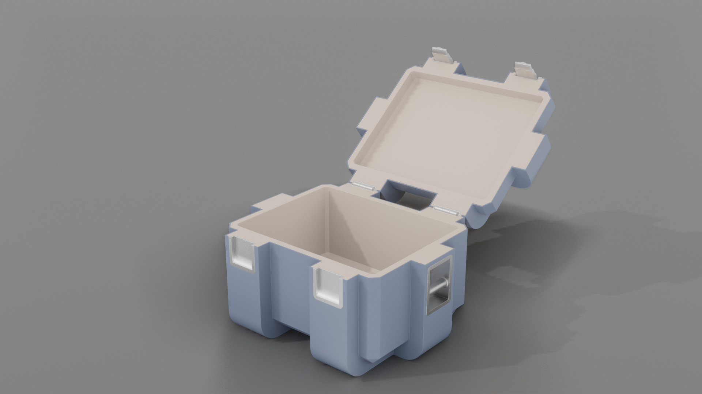
Beyond that I have started setting up our art assets git repository, separate from the main repository. This will hold all the source files for our art assets, which are not directly included in the final game. Wherever possible, I strive to have all assets in formats that are editable with open or rather low cost software, to avoid additional hurdles for working on this project. (Looking at you, Autodesk.)
Beyond the crate I have started to rework all of the building materials that I already created once (some of you might remember) for the Source version, now for Unreal. This not only should make the buildings look even better in the new engine, but gives us base materials to work with for all our assets.
Here I have a reimagining of probably the most well known material of the game.
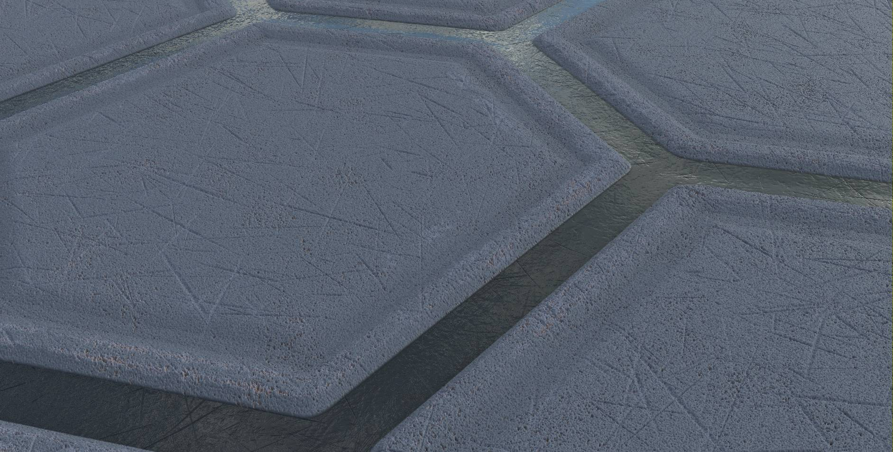
PYA: Rigging Player models
One of the first tasks we need to complete for porting over the game is to replicate the current player models. Unfortunately, despite having the original models, we actually can’t use any of the animations and by extension, the rigging work because they were rigged to the Source Engine standard humanoid skeleton.
This is why the models in Empires look so weird; their necks are craning out because we are literally stretching skin over a skeleton that doesn’t fit.
For moving over to the Unreal Engine, the initial approach was to attempt the same thing, except using the Unreal Engine Mannequin model, which is a standard available model that has animations we could use in the same way we did for the Source Engine. Unfortunately, after a lot of trial and error, we ended up finding out that it caused more issues than just looking weird; it was also nearly impossible to get things like the arms in the right position for certain animations.
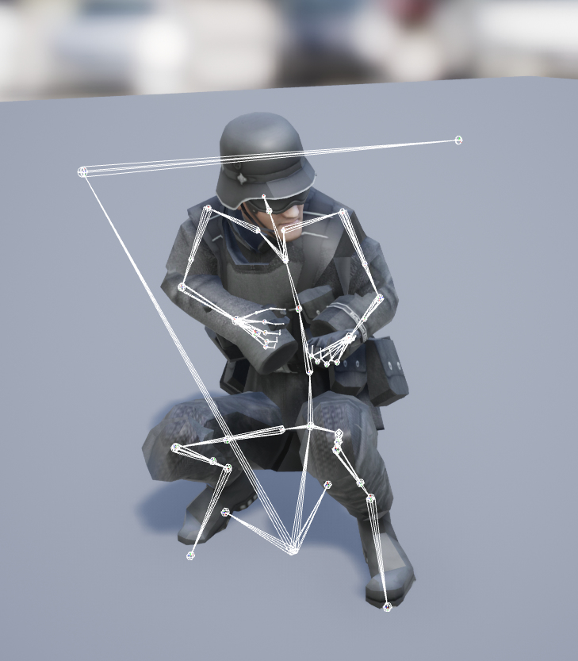
(Note the the forearms going over the hands)
So instead, we decided to make a custom skeleton for this iteration and do a process called retargeting, where we in essence use the animations from one skeleton for another one. This process has its challenges, but produces a less terrifying result.
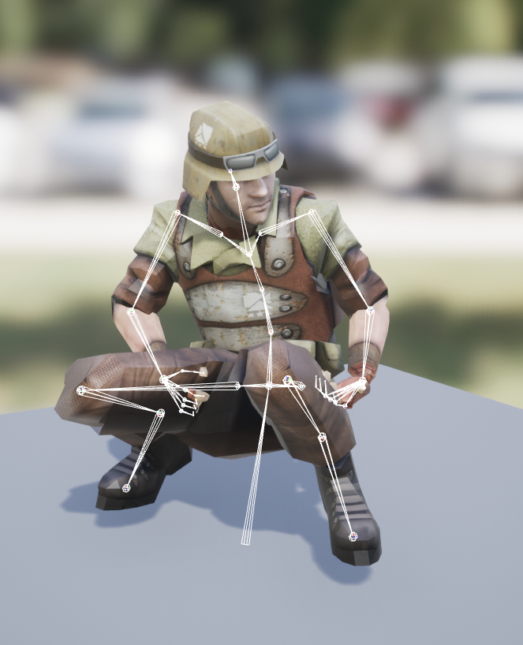
Currently still a work in progress to fix the hands; hopefully we’re able to do that and once we have we can use every animation that the Mannequin has which means we don’t have to do any animation work.
Yes: Artsy stuff
After being shoved into the #ArtistCorner on Discord, I started working on some ideas for new resource nodes so it’s not just yet-another-stone-with-smoke.
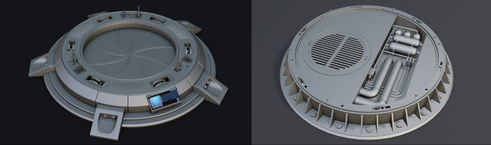
But since gameplay requiring resources is part of a later milestone, I postponed them and instead ported the Source buildings over to Unreal. It’s a bit of a mindless and less creative task, but with decent music in the background it can actually be very zen. Anyway, like the mockup scene below demonstrates it totally pays off (it’s not one of our maps, just a neat looking backdrop to show the potential)
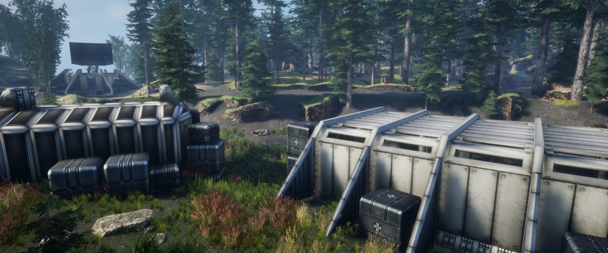
Unreal is a pretty awesome engine, the whole process is purely visual, nothing like Source where you had to write cryptic .qc files to get even the most simple model into the game. There also are great tools for automatic geometry reduction (LOD) which work like a charm (I really didn’t expect them to).
Finally I also started working on a new deployable ammo-crate for Northern Faction. While it also is not complete, it is very close.
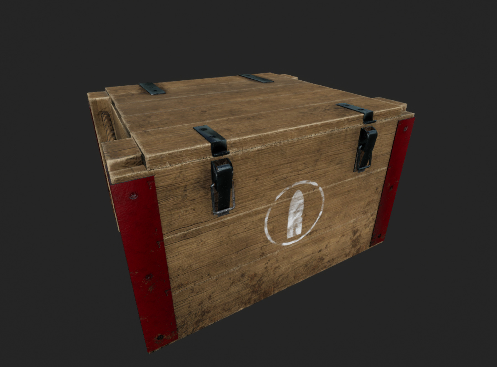
Ultimately, though this is going to be a longer process, I would like to get all empires assets to a more visually appealing and more detailed state, while - at least for the biggest part - keeping true to empires’ original design (I know the ammobox isn’t exactly the best example, but srsly the old one is just fugly as hell)
Code Updates
RoyAwesome: Abilities, Damage, Teams, and Gameplay Programming
So, aside from organizing the team, I’m also back to writing code for Empires! As the most senior UE developer on the team, I’ve been spending most of my time assisting and training other members of the team, but when I’ve had time, I also have been building out some key systems.
In my professional role, I have been building out a series of plugins over the last few years that implement gameplay systems in a generic and reusable fashion. These tools are known as ArcInventory, ArcTeams, and ArcVehicles, and the Empires project is using them to build out very configurable and powerful gameplay elements. Also, utilizing the Unreal Engine Gameplay Ability System (GAS), we are building incredibly reusable components and gameplay mechanics, and making it easy for anyone to make changes to Empires without the problem of spaghetti code causing issues elsewhere.
As part of this effort, I’ve been working on Shooting and Damage/Health mechanics. One of the key features of the ArcInventory system I had built is that it grants GameplayAbilities to players when they equip or make an item active in their hands. While Empires has a small handful of things that held items can do (guns that shoot, grenades that throw, engineer tool that beep boops), this allows us to build out any gameplay mechanic that can be activated by an item… We just simply need to create a new Ability for that item and give it to the item. When the player makes that item active, then that ability is granted to the player and they can activate it. This also works for items that are given to the player, but not held in their hands, which we plan to use for all of the skills in the game. For example, Defusal will be implemented as an Item you cannot hold, but grants you the ability to not trigger mines and an ability to diffuse them.
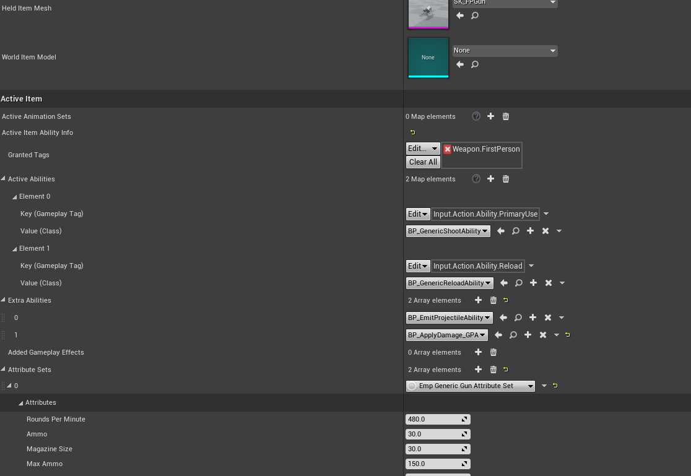
Creating a new Gun. All you have to do is set a bunch of values in this editor and select ability blueprints
From there, I also started implementing Guns, as they are the primary item type that Empires has. Guns are probably the most involved Item that Empires will have, and we’ll likely be tweaking them for years to come. To that end, I broke down the different elements of what it means to shoot, and started working on them one by one. So far, I’ve implemented Rate of Fire and Firemodes (Single shot, Burst Fire, and Full Auto), Projectile Emission (Both projectile object and hitscan. Infantry will be full hitscan until 1.0, and then we will experiment with projectiles for infantry), Rudimentary Recoil, and Damage. I’ve also implemented dying and “down but not out”.
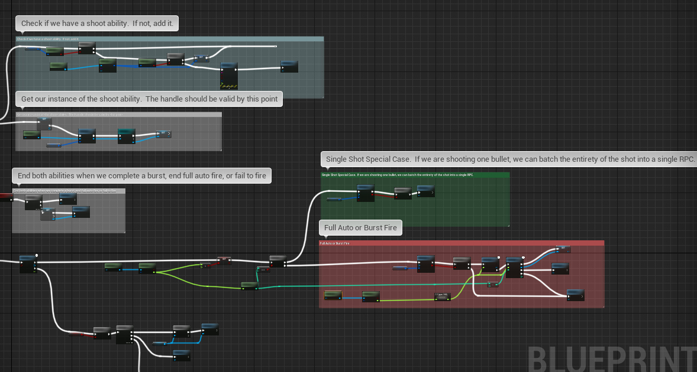
This Blueprint control Rate of Fire. It can be easily modified and swapped out if needed!
All of these elements are done with multiple different blueprints and objects in game, so they can be swapped out or modified for different uses. For example, while Infantry guns use Hitscan, Vehicles mostly use Projectiles. The rest of the code surrounding shooting is the same, so all we need to do is swap out hitscan with projectiles and suddenly the vehicle weapons are working. This is the first development goal in action!
Damage and Death, as well as the rudimentary gun mechanics in action
Finally, I also implemented Teams, using my Teams Plugin I wrote. This was actually super straightforward and was able to do it in a few hours. Teams is a very data driven system, and the teams are defined in the Game Mode, rather than hard coded as they are in the source mod. While you won’t see it before the 1.0 version (or even for some time after), having a data driven teams system allows us to do some really wild and never before seen things, such as Brenodi vs Brenodi battles, adding new factions, or even having 3 or 4 team games. All of these are possible with this data-driven approach. Teams also support what I call “SubTeams” which will function as Squads. Squads will be implemented a little better than they are implemented in the source mod, with squads being created on demand and being able to change their name, so you all can be foxtrot squad! I’m really excited to see what modders do with this dynamic team system.
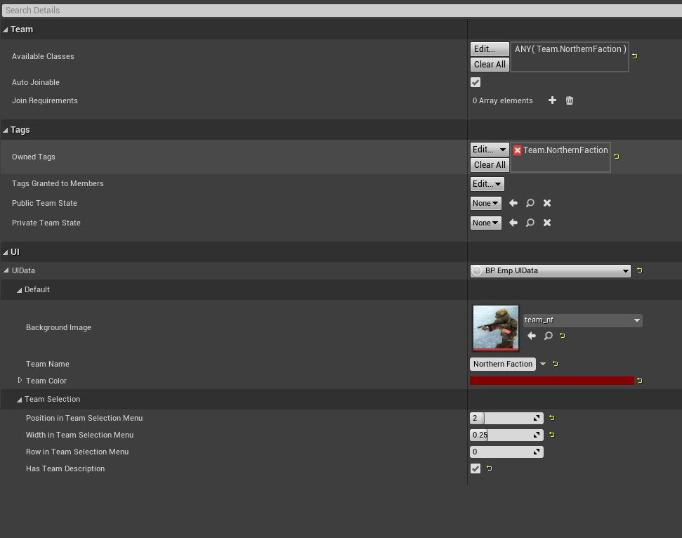 First pass at configuring the Northern Faction. Brenodi is designed the same way.
I also managed to implement a rudimentary Class system. Classes are also data objects that are created in the editor, just like Factions and Items. The purpose of a Class is to bring together a list of Items and place it into a list that users can select which of those items they wish to spawn with. To do this, I am leveraging two features of Unreal Engine, Gameplay Tags and the Asset Manager. For every Item, a set of Gameplay Tags are applied to it. Gameplay Tags are a hierarchical string that can be granted to an object. From there, we use the Asset Manager to get all of the items that match a Gameplay Tag Query, and return that list of items to be viewed in the UI. While this is fairly complicated on the code side, it completely eradicates any complexity for designers, scripters, or modders. If you wanted to add a new class to the game, simply create it and add some tags that the team queries for. If you want to remove a class from the Team’s possible classes, change the Team’s query to exclude a certain tag. While we have absolutely no plans to modify the current class list, it will become incredibly trivial for us to create new classes, remove them, change them around, or even have one team have a different list of classes than another team!
 Configuring the Brenodi Rifleman
Configuring the Brenodi Rifleman
Also, one last thing. It’s not just classes that are governed by Gameplay Tags and Tag Queries. The very slots you can put items into on a character are also governed by that. We can create any number of item slots for anything that holds an Inventory (Infantry and Vehicles immediately come to mind), and place any item into those slots. Again, while we plan on all of the guns and skills to be implemented exactly as they are in the source mod, modders can create classes with more or fewer item slots, or radically different skills. None of this is hard coded, all you have to do is change the Gameplay Tags or Tag Queries to configure how items and skills show up and can be used.
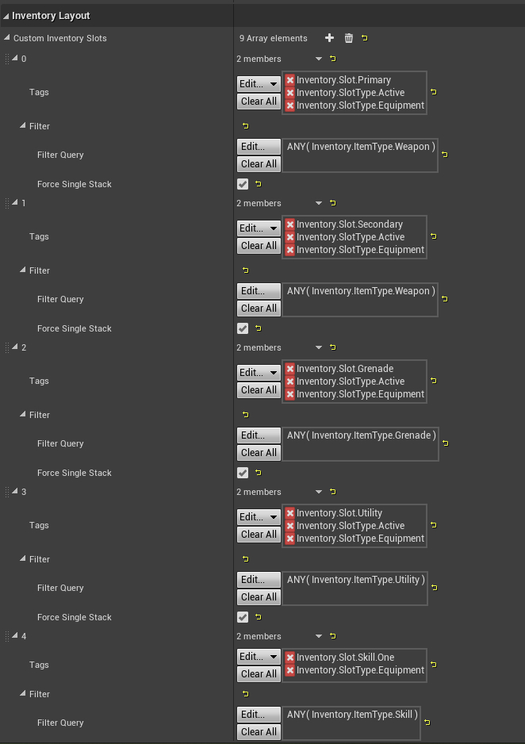 Configuring the Item Slot layout on the player
I hope this excites you all at the possibilities unleashed with this port of Empires to UE4. As I said above, the biggest goal is to make the code expandable and easy to modify, so that we aren’t locked into a hard coded design forever. I hope that Empires is worked on for another 15 years, and that the developers working on this game that far in the future are able to execute on their goals and vision for a better and more fun Empires.
Beerdude26: UI Updates
We’re also lovingly recreating the original UI, which is being worked on by Empires’ most lovable rascal, Beerdude26. We already have rudimentary versions of the Message Of The Day and Team Selection menus going (including the MOTD browser!):
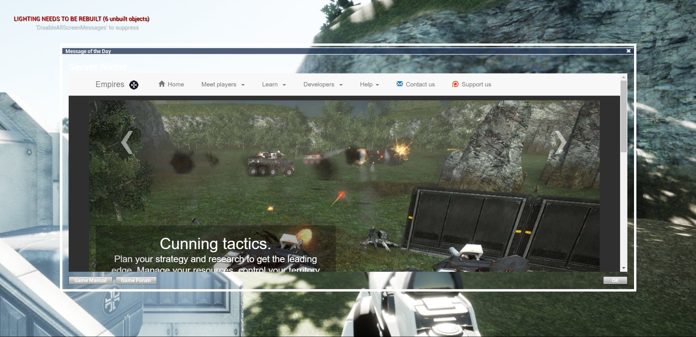
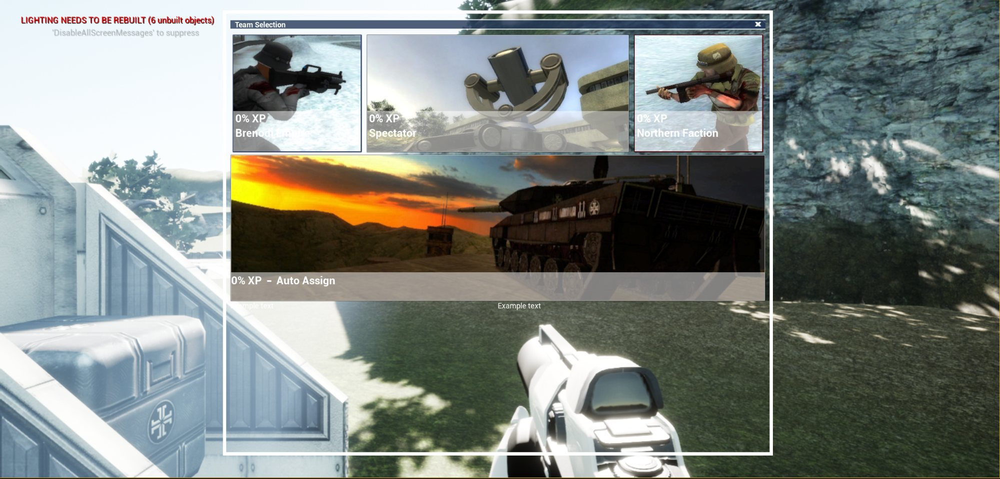
The goal is to get all the UI screens for infantry in and then have them look like the originals. Luckily, UE4 has a very powerful UI building system that makes it relatively easy to get started and build custom reusable UI elements. It’s also a bit of a learning curve, but RoyAwesome is a nice Astronomican guiding light in this Warpspace exciting new world of UI.
As work continues on weapons and weapon damage, we’ll also start work on recreating the player HUD. Nothing exciting here yet. We put a number on the bottom right side that shows your ammo count, I guess :D
Levels Updates
Sovietshark : Coast Remastered
For level design, we came to the conclusion that we should port some of the maps in Sourcepires to Unrealpires. Terminator selected Canyon, so I picked Coast which would normally be a map I would avoid due to the dreaded displacements… However, in Unreal, displacements aren’t a thing and you can freely paint terrain which is _freaking awesome _as you no longer have to push each and every vertex to get a mountain. In fact, as you can see in the image below, you can make a heightmap using various grays and then import that to get the basics of the terrain layout.
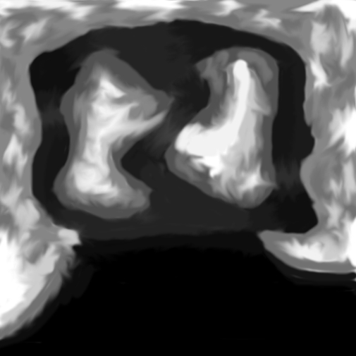
Next, after importing the heightmap you have to mess around with the scale. One of the amazing things about unreal is that you can resize the entire terrain that you’ve just imported by entering a scaling size, or by simply going into the scaling editor. After messing around with it a bit and then utilizing the “Erosion” feature, I was able to get a mountainous valley that looked almost identical to coast, as you can see in the picture below.
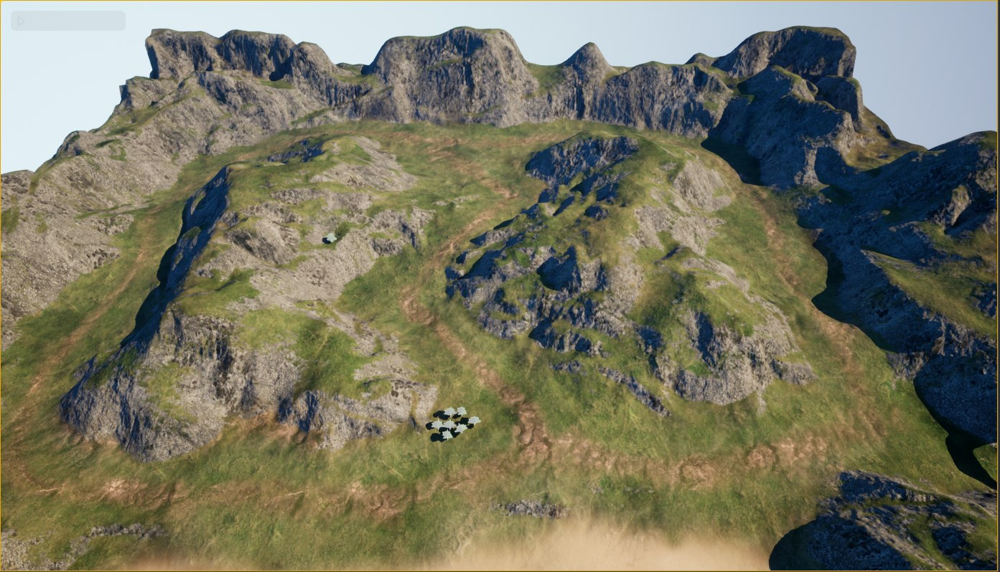
Disregard those white blobs, the LOD’s on some trees were messed up so they were swapped out.
Coloring the mountains was extremely easy due to one of the tools at our disposal which is: Brushify. This tool is a god send simply because it will detect steep elevations and then paint it automagically with a cliff blend, and allow you to have a grass area for the flatter portions. This means, until you get to the finer detailing, you can simply do one pass over the entire map to get the above photo with this tool.
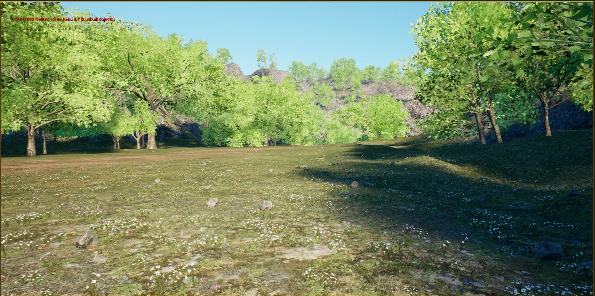
Looking towards center S pass from outside BE main in the bottom right
Foliage is also easyish to do in Unreal as you simply select which type of foliage you would like to have and then paint with that foliage over an area. You can select for each individual model that you are painting what you would like its randomization to be for scaling, which is awesome as it will make 2 trees that share the same model feel as if they are different. In fact, in the photo above and below there are only 4 different types of trees, but it’s hard to tell due to the scaling variation used.
Note: Scaling can be a bit of an issue because some things appear deceptively small, especially coming from Sourcepires where tree branches were at head height. You can see this in the photo below where a BE soldier is about 1/20th the size of a tree. I did scale most of the trees down, but they are still big enough to feel like you would be walking through a dense forest in parts, which will be awesome as it gives Infantry more cover while still allowing tanks to fire in to potentially hit them.
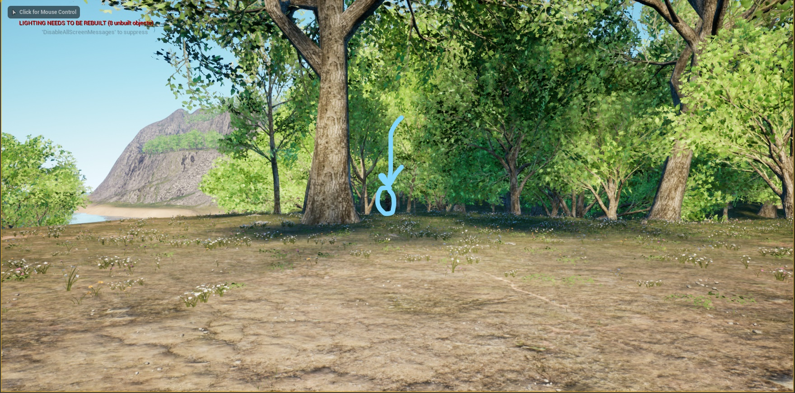
There’s some more for right now that I don’t want to share about coast, but it definitely feels more vibrant and alive with colors that make it feel like spring time.
That’s all for now for Coast. Hopefully next month I’ll have a new map that isn’t just a remaster to show!
Terminator : Canyon Remastered
As aforementioned, Soviet chose to remaster emp_coast while I’ve selected emp_canyon for a first attempt.
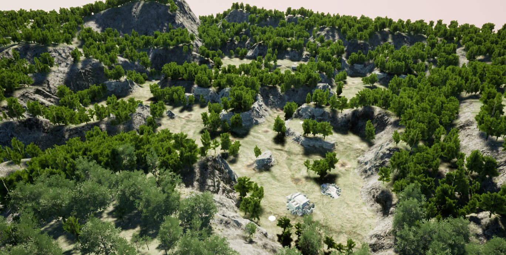
He already covered many of the new features UE4 provides that help to streamline or overall improve the level creation process. However, there are some aspects of the old mapping methods in source that will not be able to transfer over as easily. Specifically, while the new “Landscape” entities are easily modified to create interesting terrain with a variety of manipulation options, the individual ‘points’ of terrain can only be moved vertically, not shifted horizontally as is possible with vertex manipulation of displacements. This poses a problem for sheer vertical cliffs and overhangs, terrain features which are common in any source map that uses vertical displacements.
Accordingly, additional meshes (props) will be required to recreate these features where explicitly required. Though I suspect the layouts for most maps will need to simply be adjusted to account for this.
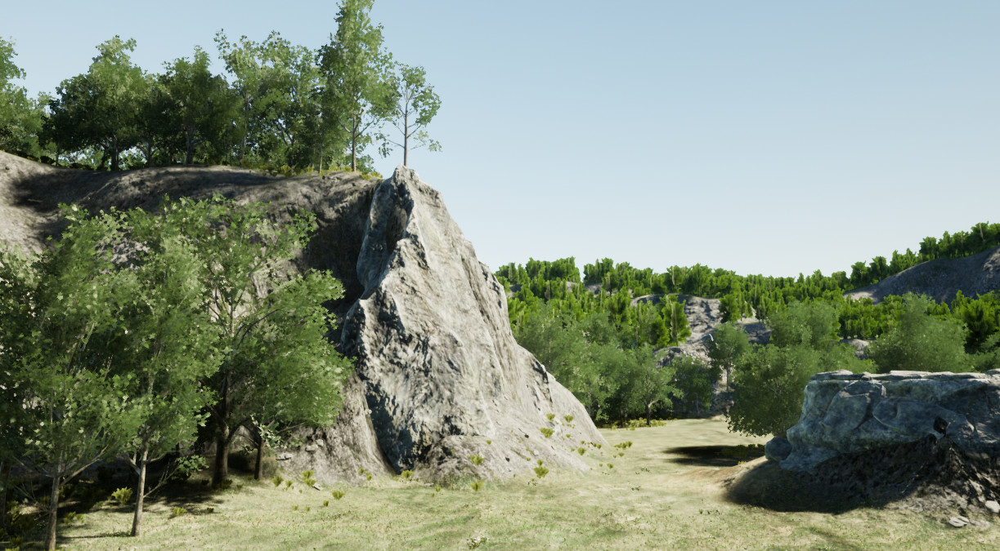
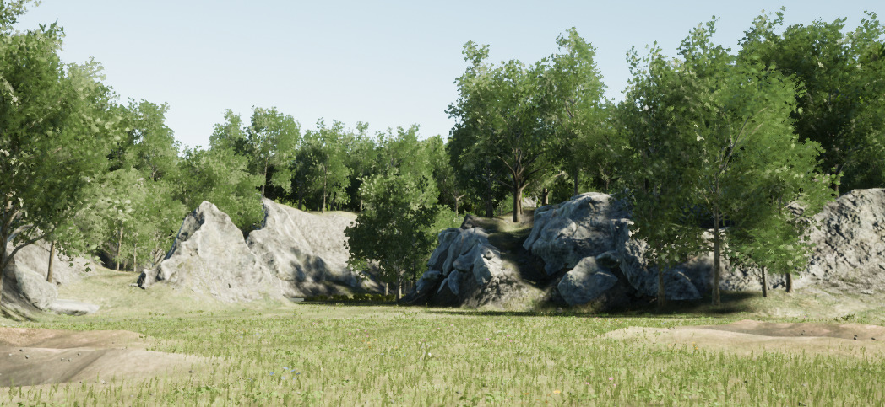
Update: There is a new experimental real time mesh editing tool in the client with UE 4.25, which may allow us to better recreate these types of features going forward. With any luck, the tool will become fully supported in future engine updates.
Conclusion
I hope this gets you all excited for the future of Empires on Unreal Engine. We have a lot more stuff in the works than what we showed off this month (including a remake of multiple music tracks). Hopefully we’ll have something playable soon to share with everyone. In the meantime, we’ll keep trying to do these updates every month, although I doubt they’ll be as full as this one. Finally, I want everyone to keep in mind, this is a spare time, nights and weekends type project for the developers. This may lead to things moving a bit slower than anticipated, but we will all try our best to complete this port and keep empires alive for years to come.
If you are interested in helping, feel free to hit me up on the Empires discord (@RoyAwesome#1989). Lemme know what you can do, and I’ll be happy for you to help out. At this point, we do need a few more artists and level designers, especially someone with a really solid understanding of the UE4 art pipeline to help continue to port Empires assets over. Additionally, an Animator would be super helpful to animate the first person and third person weapon animations that did not port over from Source.
See you all next month for the next development update!